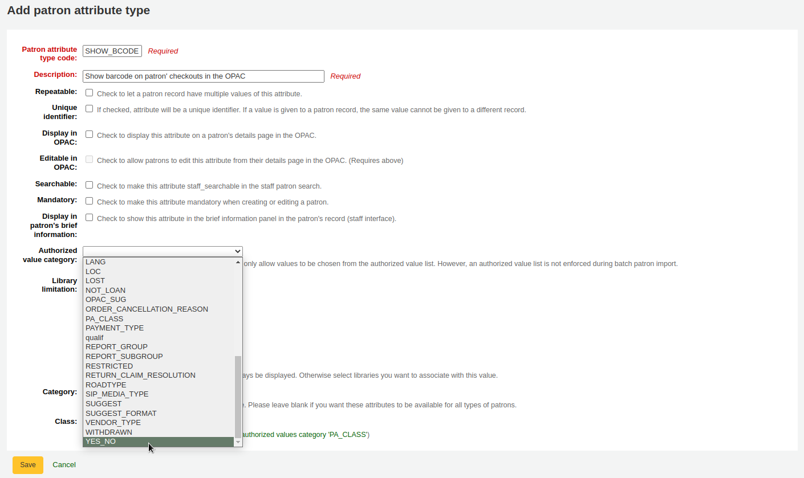

答客問
安裝
問： 如何確認我使用的 Koha 版本？
回答： 從館員介面點選關於頁面，就能簡單看到 Koha 版本。
從 OPAC 就能查看 HTML 原始碼。看起來類似這樣：
<meta name="generator" content="Koha 18.1200000" /> <!-- leave this for stats -->
詢問： 安裝 Koha 時，應使用 Debian 套件或 tarball?
答： 對初學者而言，強力推薦使用 Debian 套件安裝 Koha - 以簡單又強大的命令安裝 Koha。套件永遠是安裝 Koha 的首選。以少許系統管理技術就能以 Debian 套件安裝 Koha.
從 Debian 找到安裝的套件。
安裝在 Debian 或 Ubuntu 以外作業系統時，採用 tarball 或 git 是唯一的選擇。
軟體發展者應查看 KohaDevBox 的內容，能夠找到發展者可用的 Koha 實例。
OPAC 與館員介面
客製化 Koha 圖示
問：可以客製化 OPAC 內的圖片嗎？
答：一定可以的。Koha 預設若干圖片供您選用。置於 misc/interface_customization/ 資料夾內。
OPAC 顯示欄位
問：可以在 Koha 的 OPAC 顯示不同的 MARC 欄位嗎？
答：必須設定 XSLT 偏好才能顯示以下的欄位
OPACXSLTResultsDisplay = using XSLT stylesheets
OPACXSLTDetailsDisplay = using XSLT stylesheets
DisplayOPACiconsXSLT = show
OPAC 結果頁面顯示：
245
100, 110, 111
700, 710, 711
250
260
246
856
OPAC 詳情頁面顯示：
245
100, 110, 111
700, 710, 711
440, 490
260
250
300
020
022
246
130, 240
6xx
856
505
773
520
866
775
780
785
加在下方 ‘附註’ 分頁顯示所有的 5xx 欄位
顯示借出館藏的條碼給讀者看
問：讀者可以看自己借出館藏的條碼嗎。
答：預設是不行，但修改讀者紀錄的幾個地方後就能讓條碼欄位顯示在 OPAC 內讀者借出摘要欄內。設定 讀者屬性 中 SHOW_BCODE 的值與 容許值 中 YES_NO 的值就可以。

然後在 讀者紀錄設定值 裡把 SHOW_BCODE 設為 yes。

將在 OPAC 新增借出摘要欄，顯示借出館藏的條碼。

按 ‘逾期’ 分頁將祗顯示逾期的館藏。
Circulation/notices
費用及罰款
詢問：為什麼每筆借出都收到 5.00 的罰款？
回答：不是罰款，是租金。Koha 範例可能包括租金。以下列程序移除該等租金：
按更多 > 管理
按館藏類型
找出含 5.00 費用的館藏類型，勾選以備編輯
移除費用，儲存該館藏類型
還書箱
問：如何決定擲入還書箱的日期？是借出分館的最近開館日嗎？是今天的日期減一天嗎？可以設定擲入還書箱的日期嗎？
答：假設，圖書館關閉四天重新裝潢，還書箱實際上開放超過一天。您必須設定擲入還書箱的日期為上個圖書館的開放日 (定義在圖書館行事曆內) 因為無法得知在 4 天的閉館期該館藏實際投入的日期。改變實質擲入還入箱日期的方法是修改行事曆。
If you need to set a different checkin date, you can use the SpecifyReturnDate system preference. This will allow you to set an arbitrary date and any overdue fines will be recalculated accordingly.
取出預約與預約佇列
答：取出預約報告是一個清單，取出可借的館藏供預約之用。它顯示資料庫的 ‘活性’ 資料，可以立即顯示新的預約。顯示所有圖書館可供預約的每筆資料。
預約佇列報表依圖書館排序，列出該圖書可被預約的資料。多筆預約與分館的圖書館，將不會同時拉出該等館藏。
預約佇列報表由 build_holds_queue.pl 工作排程製作。預設每小時執行一次，也可以隨時變更。多種組態選項供圖書館取用。例如：
列印逾期通知
問：可以列印逾期通知而不發送電子郵件給讀者嗎？
答：是的，圖書館可以發送逾期通知給沒有圖書館官方電子郵件的讀者。
還有 逾期通知工作排程 可以設定列印 HTML 格式的逾期通知。範例如：
- ::
overdue_notices.pl -t -html /tmp/noticedir -itemscontent issuedate,date_due,title,barcode,author
在此例中，我們在通知內祗使用館藏的特定欄位，因此指定 itemscontent 欄位於排程款目內；這個不是必備的功能。
The command line needs to specify a web-accessible directory where the print notices will go – they get a filename like notices-2018-11-24.html (or holdnotices-2018-11-24.html). The overdue notice itself can be formatted to fit a Z-mailer. Within the notice file, the text is spaced down or over to where it will print properly on the form. The script has code that wraps around the notice file to tell the HTML to obey the formatting, and to do a page break between notices. The system preference PrintNoticesMaxLines can be used to specify the page length for libraries that allow a lot of checkouts which can lead to some notices running onto multiple pages. That system preference says to truncate the print notice at that page length and put in a message about go check your OPAC account for the full list.
排程款目是 gather_print_notices.pl /tmp/noticedir
不能續借館藏
問：我們想為讀者續借。其中一個館藏被別人預約無法續借，另兩個館藏沒人預約卻不能續借。我想啟用凌駕續借限制功能，卻得到 “續借失敗” 訊息。怎麼辦？
回答：首先應設定 預設的流通規則。此規則為所有圖書館的基本規則，’所有’ 預設館藏類型與 ‘所有’ 讀者類型。就能抓住不適用於其他流通規則的狀況。不適用其他流通規則的讀者就會被阻止在預約或續借的行列，因為沒有可預約或續借的條件。
不能預約
問：為什麼把所有的偏好都開啟仍不能借出?
答：很可能需要設定預設流通規則 流通與罰款規則。這應該是所有圖書館、所有讀者類別和館藏類型的標準規則。不符合特殊流通規則的情況都到這裡來。
預約的能力也取決於使用流通規則的’允許預約書架’的設定。根據不同的設定，如果某條記錄的任何或所有館藏都被借出，可能就無法預約。
鍵盤捷徑
問：必須使用滑鼠才能從流通頁面上方借出、還入與編目館藏嗎？
答：可以使用以下的鍵盤熱鍵在螢幕上方的搜尋盒分頁間移動 (若定位鍵可用)：
按著Alt+q，進入搜尋目錄
按 Alt+u 進入借出
麥金塔電腦不能使用此功能
按著Alt+w，進入續借分頁
按著Alt+r，進入還入
說明
麥金塔電腦以 OPTION 鈕取代 Alt
SMS 通知/訊息
問：讓 Koha 以 SMS 方式送出通知，怎麼做？
答：首先選定Koha使用的SMS服務商。有個清單在此：http://search.cpan.org/search?query=sms%3A%3Asend&mode=all 並非所有的SMS服務商提供圖書館所需的Perl驅動程式，應再次確認清單的正確性。不行的話，換服務商。美國常用到的服務商(提供Perl驅動程式)如下：
AQL (www.aql.com)
Wadja (wadja.com)
Ipipi (ipipi.com)
T-mobile
SMSDiscount (smsdiscount.com)
Clickatell
Alternatively you can configure Koha to send SMS via Email. In order to use this feature you need to set the SMSSendDriver system preference to ‘Email’ and configure the email gateways for the different SMS cellular providers of your patrons. Be aware that many mobile providers have deprecated support for the SMS::Send::Email feature. It is not recommended for use unless you have a dedicated SMS to Email gateway.
在任何案子下您可能要檢查寄送SMS給您的顧客在您的位置是否合法.
問：印度如何？
回答: 印度在這裡沒有太多的選擇. 這有部分是因為Telecom regulatory authority’s (TRAI)交易SMSes的規定以及限制每位使用者每天可以寄送/收到SMSes的數量. 在印度特定的驅動程式包括:
Unicel Technologies Pvt Ltd (unicel.in)
電子郵件通知/訊息
問題: 如何防止我的圖書館通知最後標記成垃圾郵件?
回答: 這是一個複雜的主題, 但幸好Koha透過各種系統偏好為您提供良好的控制程度.
從Koha寄出的每個電子郵件有三個重要的地址是系統用來確認, 來自, 回覆*和*寄件人. 這些都可以在系統和圖書館級別設置，並且如果未定義他們，則應該以適合的方式退回。
KohaAdminEmailAddress - 這個將會作為*來自*電子郵件地址以及位址應該與koha伺服器相同網域 [for example noreply@koha-hosting.org]
ReplytoDefault - 這個將會作為 回覆 電子郵件地址和可以適任何網域[for example librarian@mylibrary.com] 以及如果/當讀者在他們的電子郵件客戶端點擊 ‘回覆’ 這個電子郵件網址將會被使用. 注意: 如果未被設定它將會退回到KohaAdminEmailAddress.
ReturnpathDefault - 這個將被作為*寄件人* 電子郵件地址以及也需要在koha/email伺服務網域內[for example postmaster@koha-hosting.org] 還有如果一封電子郵件因為任意原因退回這個電子郵件地址將被回報.
每個分館與上述優先權有相似之處在要求退回上述系統偏好前以上述相同的順序退回。
如果您正確配置上述這些但您的電子郵件還是被當成垃圾郵件那您可能需要聯繫您的電子郵件系統供應者/dns供應者以及調查MX,SPF和DKIM紀錄.
編目
Koha對映至MARC
問題: ‘Koha對映至MARC’和’MARC書目結構’之間的關聯?
回答: 可以透過’MARC書目結構’或是’Koha對映至MARC’來說明定義. ‘Koha對映至MARC’只是一種加速關聯的捷徑. 如果你改變了其中一個模組的對映, 對映也會跟著改變. 換句話說, 為了防止來自Koha現存的衝突兩個模組相互’覆蓋’對方.
每筆書目記錄的館藏數
問：每筆書目紀錄的館藏數是否有上限？
回答:一個書目記錄可以連接的館藏數沒有限制。對於大量館藏數的紀錄，導出MARC記錄作為ISO 2709可能會有格式大小限制的問題。在一個’普通的’書目記錄上館藏數大約在600到1000之間是可以的。
分析
Question: I am using the EasyAnalyticalRecords feature, but my links in the OPAC and Staff client to ‘Show analytics’ are not working.
Answer: If you plan on using EasyAnalyticalRecords you will want to make sure to set your UseControlNumber preference to “Don’t use,” this will prevent broken links.
採訪
規畫範疇
問：規畫範疇是什麼？
答：事先規畫預算時，會畫出一個使用的計算，事情就是這麼來的。
假設計畫在一月使用 $1000、二月使用 $1000、三月使用 $3000 等。就可依月份規畫它。
就有一個像這樣的清單：
小於 1 個月
小於 6 個月
小於 1 年
小於 3 年
小於 10 年
大於 10 年
這個清單意思是表達取得書籍的出版時間.然後您計畫得到它,說: 我們想要花費我們至少40%的預算在這本出版少於一年的書,10%的預算在已出版大於十年的書, 等等.
在取得新的資料上, 您將能夠選擇, 對特定的館藏, 在下拉式列表中清單的價值. 然後, 在取得資料後, 在年底, 您將能夠比對設定的目標和達到的目標.
期刊
進階模式
問：在進階期刊模式介面裡 ‘內部計數器’ 是什麼？
答：我想還是以範例來說明較清楚：
月刊的範例：
第一期的出版年：2010 年 4 月
編碼：{X}號，{Y}年
第一期：4 號，2010 年
對 Y 年而言：您需要在 2011 年元月變更它
所以，Y 的進階模式將是：
增加：1
全部 : 12
當多於: 9999999
內部計算器：3
設定回: 0
開始於: 2010
如果您沒有設定內部計算器, 從2010年4月開始到2011年4月收到12期就要變更年份. 設定內部計算器為3將會告知Koha: 收到12-3=9期開始改變年份.
內部計數器告訴 Koha 把第一期的出版月份納入考量，即使沒有簽收亦然。若第一期從一月開始可以設定為 0 或不設定。
報表
SQL幫助
問題: 我不知道SQL, 但我想要寫一份關於X報表. 可以告訴我怎麼做嗎?
回答: 在Koha wiki上的Koha報表庫 是一個好的開始點以及包含很多其他圖書館分享的SQL報表可以再利用和改編.
Koha’s database schema 是公開的文件以及包含有關於如何使用各種表格裡的列有用的說明.
如果您陷入困境, 在社群郵件名單裡的人通常會很樂意幫助你.
代碼儲存在資料庫裡
統計表
詢問： 統計表格裡類型欄位代碼是什麼？
答案：
localuse
若館藏已被統計讀者 (類型 = ‘X’) 借出，登記為還回
期
還入
續借
核銷
付款
CreditXXX
以 XXX 代表不同類型的罰款額度，所以詢問時將包括像這樣的句子 “type LIKE ‘Credit%’”
Reserves (holds) table
詢問：在 reserves 與 old_reserves 表單裡可能的代碼為何？
答案：
NULL：表示讀者要求第 1 個可用的館藏，我們沒有選擇該館藏
T = 輸送: 預約已連結到一個館藏但是正在運送至圖書館
W = 等待: 預約已連結一個館藏,正在提取到圖書館,以及正在預約書架等待
F = Finished: the hold has been completed, and is done
報表字典表
詢問：在 reports_dictionary 表單裡可能的區域代碼為何？
答案：
1 = 流通
2 = 目錄
3 = 讀者
4 = 採訪
5 = 帳號
訊息表單
詢問：在訊息表單的 message_type 欄位裡可能的代碼為何？
答案：
L = 圖書館員
B = 供讀者之用
期刊表單
詢問：在期刊表單的狀態欄位裡可能的代碼為何？
答案：
1 = 預期
2 = 到館
3 = 遲到
4 = 遺失
5 = 不可得
6 = 刪除
7 = 催缺
8 = 停訂
41 = 遺失 (未簽收)
42 = 遺失 (售完)
43 = 遺失 (毀損)
44 = 遺失 (不見)
借閱者表單
問題: 借閱者表單和刪除_借閱者表單中隱私欄位可能的代碼是什麼?
答案：
0 = 永遠
1 = 預設
2 = 永不
讀者類型表單
問題: 類型表單可能的代碼是什麼?
答案：
A = 大人
C = 孩童
I = 組織
P = 專業人員
S = 員工
X = 統計學的
訊息優先
問： borrower_message_preferences 表單的 message_attribute_id 欄位裡有那些代碼？
答案：
2 = 進階通知
6 = 借出館藏
4 = 預約可取
1 = 館藏到期
5 = 館藏還入
催還列表
詢問：在催還表單的狀態欄位裡可能的代碼為何？
答案：
已申請
已提出新的催還請求且必須歸還館藏
等待
被催還的館藏正在請求者選擇的分館等待取件
在_途中
一件館藏已被分配為催還，並正在運送到請求者選擇的取件分館
逾期的
逾期還入的催還館藏
已履行
被催還的館藏已被借出給催還請求者，並且催還已經完成
失效
在規定的到期日之前沒有完成催還，或者催還請求者沒有在領取期限內領取他們等待的催還
已取消
催還請求被取消了。
只有要求的或逾期的催還可以被取消。
執行日誌模組和執行
詢問：action_logs表中有哪些可能的模組，而每個模組又有哪些可能的行動？
答案：
採訪
在 :ref:`採訪<acquisitions-label>`以及 :ref:`預算管理<budgets-label>`中記錄訂單和採購籃的變化
可能的行動
新增_採購籃: 一個 新採購籃已建立
APPROVE_BASKET: 一個 EDI 採購籃已獲得批准
取消_訂單: 訂單被取消
關閉_採購籃: 一個 採購籃已關閉
建立_基金: 一個 基金已建立
新增_發票_調整：調整已新增到發票
新增_訂單: 一個 訂單已新增到採購籃
刪除_基金：基金被刪除
刪除_發票_調整：從發票中刪除了一項調整
修改_採購籃: 一個 :ref:`採購籃被編輯<edit-basket-label>`（新增或修改訂單）
修正_採購籃_標題：編輯了一個採購籃的訊息（如採購籃名稱或結算地點）
編輯_採購籃_使用者：編輯了採購籃的使用者
編輯_預算：預算已編輯（這不包括 clo）
編輯_基金：一個基金被編輯了
編輯_訂單：訂單已編輯
收到_訂單: 一個 訂單已收到
重新打開_採購籃：關閉的採購籃被重新打開
更新_發票_調整：對一張發票的調整進行編輯
Enabled by the AcquisitionLog system preference
AUTH
記錄讀者或館員登入OPAC或館員介面的時間
可能的行動
失敗：讀者或館員試圖使用錯誤的身份驗證登入
成功：讀者或館員成功登入
Enabled by the AuthFailureLog and AuthSuccessLog system preferences
權威
記錄變更為 權威紀錄
可能的行動
新增: 建立權威記錄
刪除：權威記錄被刪除
修改：權威記錄被修改
Enabled by the AuthoritiesLog system preference
編目
記錄變更為 書目記錄和館藏
可能的行動
新增: 書目記錄或館藏已建立
刪除: 書目記錄或館藏被刪除了
修改：書目記錄或館藏被修改，或在記錄中加入了封面圖片
Enabled by the CataloguingLog system preference
流通
索賠
工作排程
當一個 :ref:`工作排程<cron-jobs-label>`被運行時的記錄
可能的行動
執行：執行了一個工作排程
罰款
預約
記錄對 :ref:`預約<holds-circulation-label>`的改變
可能的行動
取消：預約已取消
建立：預約保留
刪除：預約已刪除，預約的館藏已由讀者借出
FILL: 一個預約被 確認並擱置以等待取件
修改：預約的館藏被修改（優先級被改變，到期日被改變等）
恢復：一個暫停的預約被恢復了
暫停：暫停預約
Enabled by the HoldsLog system preference
ILL
成員
記錄對 :ref:`讀者文件<patrons-label>`的更改
可能的行動
ADDCIRCMESSAGE：一條內部訊息或OPAC訊息被新增到讀者的帳戶中
更改通行證：讀者的密碼已更改
新增: 一個 新增了新讀者
DELCIRCMESSAGE：內部消息或 OPAC 消息已刪除
刪除: 一個 讀者的帳號已刪除
修改: 一個 讀者的帳號已被編輯
續借：一個 讀者的會員資格已更新
Enabled by the BorrowersLog system preference
消息
注意事項
記錄對 :ref:`通知和單據模板<notices-and-slips-label>`的更改。
可能的行動
新增: 一個 新的通知或單據模板已建立
刪除：一個通知或單據模板被刪除了
修改：編輯了一個通知或單據模板
Enabled by the NoticesLog system preference.
催還
Records changes to recalls
可能的行動
取消：取消催還
過期：催還過期
FILL: a recall was filled (confirmed and set aside to wait for pickup)
過期：催還的狀態設定為’過期’
Enabled by the RecallsLog system preference
報表
記錄對 :ref:`報告<reports-label>`的更改
可能的行動
新增: 建立了一個新的報表
刪除：一份報表被刪除
修改：一份報表被編輯了
Enabled by the ReportsLog system preference
搜尋_引擎
記錄對映射的更改
可能的行動
編輯_映射：映射已修改（編輯、刪除）
重置_映射：映射被重置為原始定義
期刊
紀錄期刊訂閱的變化
可能的行動
Enabled by the SubscriptionLog system preference
SYSTEMPREFERENCE
執行參數
問：可以在執行前篩選客製化的 SQL 報表嗎？
回答: 如果您想要讓您的報表易於使用不同的篩選器和日期範圍來再利用, 您可以添加執行參數到查詢中. 執行參數基本上使篩選器在執行報表前出現.
參見 關於運行時參數的報告編寫技巧。
搜尋
進階搜尋
掃瞄索引
問：在進階搜尋頁面 ‘掃瞄索引’ 是什麼意思？
回答: 當您選擇一個索引, 輸入關鍵字, 點擊’掃描索引’搜索它, Koha顯示搜索到的關鍵字以及在這個索引以下關鍵字和相應的紀錄. 這個不是直接搜尋目錄,而是先進入索引. 它一次只針對一個索引, 且不限於圖書館或是圖書館群(需要所有圖書館).
搜尋以字元開始的關鍵字
問：如何搜尋以 ‘C’ 起頭的館藏？
答：使用 CCL ‘first-in-subfield’ 功能就可以搜尋開始的單一或一群字元
範例：ti,first-in-subfield=C
萬用字元搜尋
問：使用 ‘*’ (星號) 與使用 ‘%’ (百分號) 的鍵詞搜尋有何不同？搜尋目錄時，兩者送回不同的結果。為什麼？
答：可用四個萬用字元 (*、?、%、.) 代表英文字裡的一個或多個字母。Koha 祗使用星號 (’*’) 與百分號 (‘%’) 兩個萬用字元。然而，這兩個字元在搜尋時作用不同。
星號 ‘*’ 取代在 ‘*’ 之後的字元。搜尋時祗要前幾個字元相同，星號就可取代無限制的字元。例如，搜尋作者，Smi*，將搜尋 Smith、Smithers、Smithfield、Smiley 等，在資料庫裡的作者。
百分號 ‘%’ 將輸入的鍵詞視為 “是這樣”。所以搜尋 Smi% 會搜尋出像 Smi 的鍵詞。此結果與搜尋清單大為不同。例如，搜尋 Smi% 將送回資料庫裡包括 Smothers、Smith、Smelley、Smithfield 與其他鍵詞。
以萬用字元搜尋的底線: ‘*’更精確而’%’搜尋相似關鍵字.
題名搜尋
問：為什麼我的 Zebra 題名搜尋 ‘Help’，在第一頁的搜尋結果，找不到 ‘The help’ 呢？
回答: 通常, 您輸入越多關鍵字, 您的結果會更好. Koha沒有使用停用詞, 所以搜尋”the”和”an”還是會運作. 所以”the help”會比只用題名搜尋幫助的結果更好. 使用”Title, phrase”會促進改進結果因為這意味的這些關鍵字要照順序出現且沒有其他關鍵字在之間。
Some system preferences are known to affect relevancy ranking negatively. These are QueryAutoTruncate and UseICUStyleQuotes.
注意: 如果多個結果都是相同的關聯性分數, 它們將會按照書目號作為第二標準.
重設 Zebra 索引
執行以下的指令以重設 Zebra 的權威與書目索引。
$ zebraidx -c /etc/koha/zebradb/zebra-authorities-dom.cfg -g iso2709 -d authorities init
$ zebraidx -c /etc/koha/zebradb/zebra-biblios.cfg -g iso2709 -d biblios init
執行套件安裝時，需執行下列指令以重設 Zebra 權威與書目索引：
$ sudo zebraidx -c /etc/koha/sites/YOURLIBRARY/zebra-authorities-dom.cfg -g iso2709 -d authorities init
$ sudo zebraidx -c /etc/koha/sites/YOURLIBRARY/zebra-biblios.cfg -g iso2709 -d biblios init
以安裝 Koha 時的名稱取代 YOURLIBRARY。
增強內容
Amazon
Amazon全部內容
問：我打開 Amazon 所有的偏好，且鍵入我的密碼，但沒有任何內容顯示在系統內，為什麼？
答：Amazon 的 API 檢查所有詢問的伺服器時間，若沒有適當的設定伺服器時間，不會回應詢問。祗要妥當地設定系統時間，就可解決此問題。改變後，Amazon 內容應會立即出現。
Debian 的指令是 date -s “2010-06-30 17:21” (就是您時區的日期與時間)。
Amazon也要求ISBN來顯示書的封面 - 確保您的題名有正確的ISBN. 如果您的書遇到似乎沒有封面的問題請不要翻閱, 嘗試第一個020a中第10位數的ISBN. 如果您有第10位數以及它沒有翻閱, 嘗試第一個020a中第13位數.
伺服器管理人員
Bcrypt settings
Question: How do I configure bcrypt_settings in the Koha configuration file?
Answer: You need to generate a key and put it in the koha-conf.xml file.
The following command will generate one:
% htpasswd -bnBC 10 "" password | tr -d ':\n' | sed 's/$2y/$2a/'
Then edit $KOHA_CONF and paste the generated key into <bcrypt_settings>. If that section does not exist, add it before the end of the config section (</config) It should look something like:
<bcrypt_settings>$2a$10$PfdrEBdRcL2MZlEtKueyLegxI6zg735jD07GRnc1bt.N/ZYMvBAB2</bcrypt_settings>
警告
Do not, under any circumstances, copy the example above in your own configuration! A key is like a password: using one that has been posted online is the opposite of secure. Instead, use the command to generate your own key.
Finally, restart memcached then plack (alias restart_all)
讓Z39.50成為公開的目標
問題: 我要如何設置Zebra來讓我的資料庫可以透過Z39.50搜尋?
答：編輯 KOHA_CONF 檔案。其 publicserver 列如下：
<!– <listen id=”publicserver” >tcp:@:9999</listen> –>
改為：
<listen id=”publicserver” >tcp:@:9999</listen>
然後重新啟動 zebasrv 並連結至指定的埠 (9999)。
如何設定活動表單？
問：有沒有定期的工作排程可以從表單裡剔除舊的活動？我氜不想每晚備份無用的活動。
答：您可執行 清除資料庫工作排程。
或在執行備份指令 (mysqldump) 前，先切截活動表單：
mysql -u<kohauser -p<password <koha-db-name -e 'TRUNCATE TABLE sessions'
硬體
條碼掃瞄器
問：那種條碼掃瞄器適用於 Koha？
回答: 簡單的經驗法則是: 它表現得像是鍵盤裝置嗎? 如果是, 它將會運作. (i.e. 您可以拿掃瞄機嗎, 掃描一個條碼以及把它放在文字編輯器裡.)
檢查的重點是，它和您的 PC 可以輕鬆地連結 (經由 USB 或 “鍵盤機制” 就是與鍵盤連在一起，舊型電腦用這種方法)，且可掃瞄您使用的條碼類型。
測試 ‘使用中’ 的條碼不失為好主意，可以讀出資料就可以。大部份的掃瞄器可以讀取多種格式的條碼 – 有很多，且列出可以讀者的規格。或許需要稍為調整設定，前置或後置字元，或同時送出 ‘歸位’ 字元。
還有一點 - 某些機種可以設為 ‘總是開啟’ 且有支架，有些在把手下有個按鈕，有些在上方有個鈕，有些看起來像隻筆。以館員工作的舒適度為選取的依據，錯誤位置的鈕使用起來很怪。
印表機
Koha 圖書館使用的印表機
在這裡一般的經驗法則是如果您可以從瀏覽器用印表機列印, 它將會和Koha一起運作.
POS-X 收條印表機
Star Micronics 列表機 (正確型號不詳) 含通用/文字驅動程式。
Star SP2000 (Nelsonville)
Star TSP-100 futurePRINT (Geauga)
“我知道收條印表很有問題，所以提供我的經驗。我們試過 Star TSP-100 futurePRINT。該款印表機很容易組態給 Koha 使用。甚至在每個收條加上我們系統的標籤 (一個 .gif 檔案)。也可在收條最後加上若干連絡資訊、開館時間與圖書館網址等與借出有關的資料”。
Epson TM 88 IIIP 熱感應收條印表機
Epson TM-T88IV
Dymolabelwriter 印表機用的 1x1 書標
支援盲文點字法
問題: 請問有內建點字轉換器且可以在UNIX的環境下取得的點字壓印機或是印表機?
答覆：您可查看 BRLTTY。